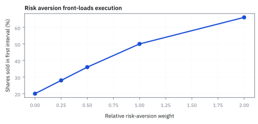

18.6 Almgren-Chriss Optimal Execution
ขายเร็วเสีย impact ขายช้าเสี่ยงราคาวิ่งหนี เมื่อเขียนสองอย่างนี้เป็นคะแนนเดียว แผนที่ดีที่สุดออกมาเป็นเส้นโค้ง sinh ที่ชันแค่ไหนขึ้นกับความกลัวความเสี่ยงที่เราเลือกเอง
โต๊ะเทรดต้องขายหุ้น 100,000 หุ้นให้หมดในห้าครั้ง วันละครั้ง ขายครั้งละ $n$ หุ้นจะได้ราคาต่ำกว่าราคาตลาด $\eta n$ ต่อหุ้น ($\eta=10^{-5}$) จึงเสียเงิน $\eta n^2$ ดอลลาร์ ส่วนหุ้นที่ยังขายไม่ออก โต๊ะคิดเป็นต้นทุนความเสี่ยง $c$ ดอลลาร์ต่อหุ้นกำลังสอง เทรดเดอร์คนหนึ่งเสนอขายเท่ากันครั้งละ 20,000 หุ้น อีกคนเสนอเร่งขาย 40, 30, 20, 10 และ 0 พันหุ้น ถ้า $c=10^{-6}$ แผนไหนดีกว่า และถ้า $c=3\times10^{-6}$ ล่ะ
ลองตอบก่อนเปิดเฉลย
ที่ $c=10^{-6}$ แผนขายเท่ากันชนะ คะแนน \$32,000 ต่อ \$34,600 ที่ $c=3\times10^{-6}$ แผนเร่งชนะ \$43,800 ต่อ \$56,000 ตลาดไม่ได้เปลี่ยนอะไรเลย เปลี่ยนแค่ตัวเลขความกลัวที่โต๊ะเลือกเอง และทั้งสองแผนแพ้แผนที่ดีที่สุดของแบบจำลอง ซึ่งได้ \$29,885 และ \$42,299 ตามลำดับ
ภาพรวมก่อนลงสูตร
คำสั่งขายก้อนใหญ่ต้องกินราคาลึกลงไปในฝั่งคนรับซื้อ ยิ่งก้อนใหญ่ยิ่งได้ราคาแย่ นี่คือ market impact ที่ market microstructure วัดไว้ ทางแก้คือแบ่งขายทีละน้อย แต่ระหว่างที่ทยอยขาย หุ้นที่ยังถืออยู่ก็ขึ้นลงตามตลาด เงินที่จะได้จึงไม่แน่นอน ขายเร็วเสีย impact มากแต่เสี่ยงน้อย ขายช้าเสีย impact น้อยแต่เสี่ยงมาก
Almgren กับ Chriss ชั่งสองแรงนี้ด้วยตัวเลขเดียว: ต้นทุนที่คาดว่าจะเสีย บวกความกลัวความเสี่ยงคูณความแปรปรวนของเงินที่จะได้ เป็นรูปเดียวกับ mean-variance ของ Markowitz portfolio theory ต่างกันแค่ตัวแปรที่เลือกคือจำนวนหุ้นที่ขายแต่ละวัน แทนน้ำหนักของหุ้นแต่ละตัว
หน้านี้ทำบัญชีเงินจากแบบจำลองราคาให้เห็นว่าความเสี่ยงมาจากหุ้นที่ยังถือ ให้คะแนนแผนด้วยมือ หาแผนที่ดีที่สุดจากเงื่อนไขอันดับหนึ่ง ดูเส้น frontier ของต้นทุนกับความเสี่ยง ดูว่าทำไมแผนที่มีเวลามาก ๆ กลายเป็นการขายแบบ exponential แล้วจบที่เพดานปริมาณของโต๊ะและไฟล์ Excel ที่ใช้ impact แบบไม่เป็นเส้นตรง รูปด้านล่างคือคำตอบของทั้งหน้าในภาพเดียว
รูป — แผนขายที่ดีที่สุดเมื่อความกลัวความเสี่ยงต่างกัน
ศัพท์ที่ใช้ในหัวข้อนี้
- Optimal execution
- การเลือกว่าจะซื้อหรือขายครั้งละเท่าไรจนครบคำสั่ง ให้ต้นทุนที่คาดบวกราคาของความเสี่ยงต่ำที่สุด ใช้เปลี่ยนเป้าหมายของโต๊ะเป็นตารางส่งคำสั่งที่ตรวจย้อนหลังได้
- Temporary impact และ permanent impact
- temporary คือส่วนที่คำสั่งเสียเฉพาะราคาของตัวเอง แล้วราคาฟื้นกลับหลังขายเสร็จ permanent คือรอยกดที่ค้างอยู่และกระทบทุกหุ้นที่ขายหลังจากนั้น ใช้แยกว่าต้นทุนไหนขึ้นกับความเร็วขาย
- Inventory risk
- ความเสี่ยงของหุ้นที่ยังขายไม่หมด ถ้าราคาวิ่งหนีระหว่างรอ หุ้นที่เหลือขายได้น้อยลง ยิ่งถือมากและนานยิ่งเสี่ยง เป็นแรงเดียวที่บอกให้รีบขาย
- Risk aversion ($\lambda$)
- ราคาที่โต๊ะยอมจ่ายต่อความแปรปรวนหนึ่งหน่วยของเงินที่จะได้ ตลาดไม่ได้กำหนดให้ โต๊ะเลือกตามความเร่งด่วนของลูกค้า และมันตัดสินว่าแผนจะเร่งแค่ไหน
- Execution frontier
- เส้นของแผนที่ดีที่สุดเมื่อ $\lambda$ เปลี่ยนไปทีละค่า บนระนาบต้นทุนที่คาดกับความเสี่ยง แผนใดอยู่เหนือเส้นคือมีแผนอื่นที่เสี่ยงเท่ากันแต่ถูกกว่า
- Participation rate
- คำสั่งของเราเป็นกี่เปอร์เซ็นต์ของปริมาณซื้อขายทั้งตลาดในช่วงเดียวกัน โต๊ะใช้เป็นเพดานเพื่อไม่ให้คำสั่งของตัวเองครองตลาดจนราคาวิ่ง
สัญลักษณ์และหน่วย
| สัญลักษณ์ | ความหมาย | หน่วย |
|---|---|---|
| $X,\ T$ | จำนวนหุ้นที่ต้องขาย และจำนวนครั้งที่ขาย | หุ้น, ครั้ง |
| $n_k$ | หุ้นที่ขายในครั้งที่ $k$ | หุ้น |
| $x_k$ | หุ้นที่ยังถือหลังขายครั้งที่ $k$ ($x_0=X$, $x_T=0$) | หุ้น |
| $S_k,\ \hat S_k$ | ราคาตลาดก่อนขายครั้งที่ $k$ และราคาที่ได้จริง | ดอลลาร์ต่อหุ้น |
| $\eta,\ \gamma$ | ตัวคูณ impact ชั่วคราวและถาวร | ดอลลาร์ต่อหุ้นต่อหุ้นที่ขาย |
| $\sigma$ | ความผันผวนของราคาต่อช่วง | ดอลลาร์ต่อหุ้น |
| $\lambda,\ c$ | ความกลัวความเสี่ยง และ $c=\lambda\sigma^2$ | ต่อดอลลาร์, ดอลลาร์ต่อหุ้นกำลังสอง |
ขั้นที่ 1 — แบบจำลองราคา: impact สองแบบ
ก่อนจะชั่งอะไรได้ ต้องมีกติกาว่าการขายเปลี่ยนราคาอย่างไร แบบจำลองนี้แยก impact เป็นสองส่วน ส่วนแรกกระทบเฉพาะราคาของคำสั่งนั้น ส่วนที่สองกดราคาของทุกครั้งที่ขายตามมา
$S_k$ คือราคาตลาดก่อนขายครั้งที่ $k$ แต่เราได้ $\hat S_k$ ซึ่งต่ำกว่า $h(n_k)$ เพราะคำสั่งต้องไล่กินราคาที่แย่ลงเรื่อย ๆ ในฝั่งคนรับซื้อ นี่คือ temporary impact หลังขายเสร็จ ราคาฟื้นกลับมา เหลือแค่รอยกดถาวร $g(n_k)$ ซึ่งเกิดเพราะตลาดอ่านว่าคำสั่งขายอาจมีข้อมูลอยู่ บวกกับการเดินสุ่ม $\sigma z_k$ โดย $z_k$ เป็น Normal มาตรฐานที่อิสระกันทุกช่วง
รูปเส้นตรงของ $h$ และ $g$ เป็นตัวเลือกที่ง่ายที่สุด ไม่ใช่กฎธรรมชาติ ต้นทุนการซื้อขายจริงมักแยกเป็นสามก้อน คือ spread, temporary impact และ permanent impact สำหรับการวางแผนแบ่งคำสั่ง สองก้อนแรกใหญ่กว่าก้อนสุดท้ายมาก ไฟล์ Excel ในขั้นสุดท้ายใช้ $h$ แบบไม่เป็นเส้นตรงของ Kissel–Glantz
รูป — ราคาตลาดถูกกดถาวรทีละนิด ราคาที่ได้จริงต่ำกว่าอีกก้อน
ขั้นที่ 2 — บัญชีเงินที่ได้: ความเสี่ยงมาจากหุ้นที่ยังถือ
รวมเงินที่ได้จากการขายทุกครั้ง แล้วจัดใหม่ให้เห็นว่าการเดินสุ่มของแต่ละวันไปคูณกับอะไร
แถวแรกได้จากต่อสมการราคาของแบบจำลองย้อนไปถึง $S_1$ พอแทนลงใน $\sum\hat S_kn_k$ จะติดผลบวกซ้อน $\sum_k\sum_{j\lt k}z_jn_k$ กลที่ต้องใช้คือสลับลำดับการนับ แทนที่จะถามว่าการขายครั้งที่ $k$ โดนการเดินสุ่มวันไหนบ้าง ให้ถามว่าการเดินสุ่มวันที่ $j$ โดนการขายครั้งไหนบ้าง คำตอบคือทุกครั้งหลังวันที่ $j$ ซึ่งรวมกันได้ $n_{j+1}+\dots+n_T=x_j$ คือหุ้นที่ยังถืออยู่หลังขายครั้งที่ $j$ พอดี ก้อน $g$ สลับแบบเดียวกัน
$z_j$ มีค่าเฉลี่ยศูนย์ เงินที่คาดว่าจะได้จึงเป็นมูลค่าตั้งต้น $S_1X$ ลบต้นทุน $C$ และเพราะ $z_j$ อิสระกันและมีความแปรปรวน 1 ความแปรปรวนของ $\sigma\sum z_jx_j$ จึงเป็น $\sigma^2\sum x_j^2$ (หยุดที่ $T-1$ เพราะ $x_T=0$) ทุกหุ้นที่ยังถือข้ามช่วงหนึ่งช่วงคือหุ้นที่โดนการเดินสุ่มของช่วงนั้นเต็ม ๆ ขายเร็ว $x_k$ เล็ก เสี่ยงน้อยแต่ $h$ ใหญ่ ขายช้าตรงข้าม
รูป — หุ้นที่ยังถือหลังขายแต่ละครั้งของสองแผน
ขั้นที่ 3 — impact ถาวรแบบเส้นตรงไม่เปลี่ยนแผน และคะแนนที่ใช้ทั้งหน้า
ต้นทุนถาวร $\gamma\sum n_kx_k$ ดูเหมือนขึ้นกับแผน ลองเขียนมันด้วยผลบวกกำลังสองของจำนวนที่ขายแต่ละครั้ง
แถวที่สามใช้ $x_k=n_{k+1}+\dots+n_T$ ดังนั้น $n_kx_k$ คือผลคูณของการขายครั้งที่ $k$ กับทุกครั้งที่ตามมา ซึ่งคือครึ่งหนึ่งของพจน์ไขว้ใน $X^2$ ผลคือ impact ถาวรแบบเส้นตรงเพิ่มค่าคงที่ $\tfrac12\gamma X^2$ ที่ทุกแผนจ่ายเท่ากัน และหักออกจาก $\eta$ อีกนิด จึงไม่เปลี่ยนว่าแผนไหนดีกว่า ส่วนที่เหลือของหน้าจึงตัด $\gamma$ ทิ้ง
แถวสุดท้ายเป็นนิยามของคะแนน ไม่ใช่ผลที่พิสูจน์: ต้นทุนที่คาดบวก $\lambda$ คูณความแปรปรวน และ $c=\lambda\sigma^2$ ทั้งสองก้อนเป็นดอลลาร์ $\lambda$ จึงมีหน่วยต่อดอลลาร์ นี่คือปัญหาแบบเดียวกับ mean-variance กับต้นทุนการซื้อขาย ต่างกันที่ตัวแปรคือจังหวะเวลาของการขาย ไม่ใช่น้ำหนักพอร์ต
ขั้นที่ 4 — ถ้าไม่กลัวความเสี่ยงเลย ขายเท่ากันทุกครั้ง และยิ่งช้ายิ่งถูก
ดูกรณีสุดขั้วก่อน $c=0$ เหลือแค่ $\eta\sum n_k^2$ โดยต้องขายครบ $\sum n_k=X$ เขียนแต่ละครั้งเป็นค่าเฉลี่ยบวกส่วนเบี่ยง $n_k=X/T+d_k$ ซึ่ง $\sum d_k=0$ เพราะยอดรวมต้องเป็น $X$
ก้อนกลางหายเพราะ $\sum d_k=0$ ก้อน $\sum d_k^2$ ไม่ติดลบ และเป็นศูนย์เฉพาะเมื่อทุกครั้งขายเท่ากัน ทุกความเบี่ยงเบนจากค่าเฉลี่ยทำให้แพงขึ้นเพราะ impact เป็นกำลังสอง ขายห้าครั้งเท่ากันเสีย \$20,000 ขายทีเดียวเสีย \$100,000
ต้นทุนต่อหุ้น $\eta X/T$ ลดลงเมื่อใช้เวลาขายนานขึ้น ถ้าไม่มีความเสี่ยง ทางที่ดีที่สุดคือยืดการขายออกไปให้นานที่สุด ความเสี่ยงของหุ้นที่ถือค้างจึงเป็นแรงเดียวที่บอกให้รีบ ตัวเลข $c$ คือตัวบอกว่ารีบแค่ไหน
ขั้นที่ 5 — ให้คะแนนสองแผนของโจทย์เปิดหน้าด้วยมือ
โจทย์ให้อะไรมาบ้าง: แผนเท่ากัน (eq) ขายครั้งละ 20,000 หลังขายเหลือ 80, 60, 40, 20 พันหุ้น แผนเร่ง (fr) ขาย 40, 30, 20, 10, 0 พันหุ้น หลังขายเหลือ 60, 30, 10, 0 พันหุ้น $\eta=10^{-5}$ เขียน $I$ แทนต้นทุน impact และ $Q$ แทน $\sum x_k^2$
คำตอบ: คะแนน $J=I+cQ$ ที่ $c=10^{-6}$: แผนเท่ากัน $20{,}000+12{,}000=\$32{,}000$ แผนเร่ง $30{,}000+4{,}600=\$34{,}600$ แผนเท่ากันชนะ ที่ $c=3\times10^{-6}$: แผนเท่ากัน $20{,}000+36{,}000=\$56{,}000$ แผนเร่ง $30{,}000+13{,}800=\$43{,}800$ แผนเร่งชนะ
ตรวจเองใน 10 วินาที: แผนเร่งจ่าย impact มากกว่า \$10,000 แต่ลด $Q$ ลง $7{,}400\times10^6$ จึงคุ้มเมื่อ $c\times7.4\times10^9\gt10{,}000$ คือ $c\gt1.35\times10^{-6}$ ซึ่งอยู่ระหว่างสองค่าที่ลอง
ขั้นที่ 6 — แผนที่ดีที่สุดจากเงื่อนไขอันดับหนึ่ง: สูตรปิดแบบ sinh
แทนที่จะลองทีละแผน ให้ตัวแปรเป็นหุ้นที่ถือ $x_1,\dots,x_{T-1}$ (เพราะ $n_k=x_{k-1}-x_k$) แล้วตั้งอนุพันธ์ของ $J$ เทียบแต่ละตัวเป็นศูนย์ตาม gradient และเงื่อนไขอันดับหนึ่ง ตัว $x_k$ โผล่ในการขายสองครั้ง (ครั้งที่ $k$ และ $k+1$) และในความเสี่ยงหนึ่งพจน์
หารด้วย $2\eta$ แล้วจัดข้าง ได้สมการผลต่างที่บอกว่า “ความโค้ง” $x_{k+1}-2x_k+x_{k-1}$ เท่ากับ $\kappa^2x_k$ เส้นทางที่ดีที่สุดต้องโค้งหงายมากตรงที่ยังถือมาก ลองคำตอบรูป $x_k=e^{\tilde\kappa k}$ แทนลงไปแล้วหารด้วย $e^{\tilde\kappa k}$ ได้ $e^{\tilde\kappa}+e^{-\tilde\kappa}=2+\kappa^2$ ซึ่งคือ $2\cosh\tilde\kappa=2+\kappa^2$ รูป $e^{-\tilde\kappa k}$ ก็ใช้ได้ด้วยเหตุผลเดียวกัน
คำตอบทั่วไปจึงเป็น $Ae^{\tilde\kappa k}+Be^{-\tilde\kappa k}$ เลือก $A$ กับ $B$ ให้ $x_0=X$ และ $x_T=0$ ได้รูป sinh ในแถวสุดท้าย (sinh $a=(e^a-e^{-a})/2$ ซึ่งเป็นศูนย์ที่ $a=0$ จึงทำให้ $x_T=0$ เอง) $J$ เป็นผลบวกของกำลังสองล้วน จึงเป็นชามหงายที่มีก้นเดียว จุดที่อนุพันธ์เป็นศูนย์คือจุดต่ำสุดจริง ถ้า $c\to0$ จะได้ $\tilde\kappa\to0$ และอัตราส่วน sinh เข้าใกล้ $(T-k)/T$ คือเส้นตรง ขายเท่ากันแบบกรณีไม่กลัวความเสี่ยง
ขั้นที่ 7 — แผนที่ดีที่สุดของโจทย์เปิดหน้า
โจทย์ให้อะไรมาบ้าง: $X=100{,}000$, $T=5$, $\eta=10^{-5}$ และ $c=10^{-6}$ จึงได้ $\kappa^2=0.1$
คำตอบ: แผนที่ดีที่สุดขายครั้งแรกเกือบ 30,000 หุ้น แล้วลดลงทุกครั้ง คะแนน \$29,884.60 ดีกว่าทั้งสองแผนที่ให้คะแนนด้วยมือ มันจ่าย impact มากกว่าแผนเท่ากันแค่ \$1,698 แต่ลดความเสี่ยงได้ \$3,814 ที่ $c=3\times10^{-6}$ ครั้งแรกขาย 42,298.75 หุ้น คะแนน \$42,298.75 และที่ $c=10^{-5}$ ครั้งแรกขาย 61,818.18 หุ้น
ตรวจเองใน 10 วินาที: คะแนนที่ดีที่สุดเท่ากับ $\eta Xn_1=10^{-5}(10^5)(29{,}884.60)$ พอดี เพราะ $J$ เป็นกำลังสองล้วนของ $(X,x_1,\dots,x_{T-1})$ ผลบวกของแต่ละตัวแปรคูณอนุพันธ์ของมันจึงเท่ากับ $2J$ ที่จุดต่ำสุดอนุพันธ์ของ $x_k$ ทุกตัวเป็นศูนย์ เหลือแค่ $X\cdot2\eta n_1$ และตรวจสมการผลต่างที่ $k=1$: $x_2+x_0=47{,}242.35+100{,}000=2.1(70{,}115.40)$
ขั้นที่ 8 — execution frontier: แผนเร่งด้วยมือเป็นแผนที่เปลือง
เพื่อให้ความเสี่ยงอ่านเป็นเงินได้ สมมติ $\sigma=\$2$ ต่อหุ้นต่อวัน (หุ้นราคา \$100 ที่ความผันผวนรายวัน 2%) SD ของเงินที่ได้คือ $\sigma\sqrt Q$ แต่ละค่า $c$ ให้แผนที่ดีที่สุดหนึ่งแผน และหนึ่งจุดบนระนาบ (SD, ต้นทุนที่คาด) เส้นที่ลากผ่านจุดเหล่านี้คือ execution frontier ถามว่าแผนเร่งด้วยมืออยู่บนเส้นไหม: หาแผนที่ดีที่สุดที่ $Q$ เท่ากับแผนเร่ง ($4{,}600\times10^6$) โดยแบ่งครึ่งช่วงของ $c$ ไปเรื่อย ๆ
ที่ความเสี่ยงเท่ากันทุกหลัก แผนบนเส้นจ่าย impact น้อยกว่าแผนเร่งด้วยมือ \$1,488.06 แผนเร่งจึงอยู่เหนือเส้น และไม่มีค่า $c$ ไหนที่ทำให้มันดีที่สุด สาเหตุคือมันลดลงเป็นเส้นตรงจนครั้งสุดท้ายขายศูนย์ ขณะที่แผนบนเส้นเร่งช่วงต้นแรงกว่า (43,054) แล้วเก็บหางยาวกว่า (7,308) เพราะ impact เป็นกำลังสอง การเกลี่ยปลายทางจึงถูก
สังเกตขนาด: SD ของเงินที่ได้ \$136,000 ถึง \$219,000 ใหญ่กว่าต้นทุน impact ที่คาด \$20,000 ถึง \$30,000 หลายเท่า ผลของคำสั่งเดียวจึงถูกโชคครอบงำ ค่า $c=10^{-6}$ กับ $\sigma=2$ แปลว่า $\lambda=c/\sigma^2=2.5\times10^{-7}$ ต่อดอลลาร์ หรือคิดความเสี่ยงที่ SD \$200,000 เป็นเงิน $\lambda(200{,}000)^2=\$10{,}000$
รูป — execution frontier ของต้นทุนกับความเสี่ยง
ขั้นที่ 9 — ถ้าไม่มีเส้นตาย: ขายเป็นสัดส่วนคงที่ของที่เหลือ
เส้นตาย $T$ บังคับให้ $x_T=0$ คำถามคือเส้นตายสำคัญแค่ไหน เขียน sinh กลับเป็น exponential แล้วดูว่าเกิดอะไรเมื่อ $T$ ไกลมาก
แถวที่สองคูณทั้งเศษและส่วนด้วย $2e^{-\tilde\kappa T}$ เมื่อ $T$ โต พจน์ที่มี $T$ หายไป เหลือ $e^{-\tilde\kappa k}$ แปลว่าแต่ละครั้งขาย 27.02% ของที่ยังเหลือ และหุ้นที่ถือลดลงครึ่งหนึ่งทุก 2.20 วัน แผนที่ไม่มีเส้นตายจึงเป็นการระบายของออกแบบ exponential ในเวลาต่อเนื่องเขียนได้ว่า $\dot x=-\kappa x$ โดย $\kappa=0.3162$ ใกล้ $\tilde\kappa$ มาก
แถวสุดท้ายบอกทิศของทุกอย่างในตัวเดียว: ยิ่งกลัวความเสี่ยง ($\lambda$ ใหญ่) หรือหุ้นยิ่งผันผวน ($\sigma$ ใหญ่) ยิ่งระบายเร็ว ยิ่ง impact แพง ($\eta$ ใหญ่) ยิ่งระบายช้า เส้นตายจะเปลี่ยนแผนก็ต่อเมื่อมันสั้นเมื่อเทียบกับครึ่งชีวิต 2.2 วัน เส้นตาย 5 วันจึงงอปลายเส้นให้ลงถึงศูนย์ แต่เส้นตาย 20 วันแทบไม่มีผล
รูป — เส้นตายสั้นงอปลาย เส้นตายยาวกลายเป็น exponential
ขั้นที่ 10 — แผนสวยแต่ส่งจริงได้ไหม: เพดานปริมาณของโต๊ะ
โจทย์ให้อะไรมาบ้าง: โต๊ะห้ามขายเกิน 15% ของปริมาณซื้อขายต่อวัน หุ้นนี้ซื้อขายวันละ 200,000 หุ้น จึงขายได้ไม่เกินวันละ 30,000 หุ้น ใช้ $c=3\times10^{-6}$ แผนที่ดีที่สุดจากสูตร sinh ขายครั้งแรก 42,299 หุ้น เกินเพดาน
คำตอบ: ถ้าแค่ตัดครั้งแรกเหลือ 30,000 แล้วคิดสี่ครั้งที่เหลือใหม่จาก 70,000 หุ้น ครั้งที่สองจะเป็น 30,315 หุ้น ซึ่งเกินเพดานอีก จึงต้องให้เพดานบังคับทั้งสองครั้งแรก แล้วคิดสามครั้งที่เหลือด้วยสูตร sinh เดิมจาก 40,000 หุ้น เพดานทำให้คะแนนแย่ลง \$2,623.16 ซึ่งคือราคาของการเคารพกฎ
ตรวจเองใน 10 วินาที: $30{,}000+30{,}000+18{,}555+12{,}121+9{,}324=100{,}000$ และไม่มีครั้งไหนเกิน 30,000
ขั้นที่ 11 — ไฟล์ Excel ของคอร์ส: ขาย 1,000 หุ้นใน 10 ครั้งด้วย impact แบบ Kissel–Glantz
โจทย์ให้อะไรมาบ้าง: ไฟล์ใช้ impact ถาวรเส้นตรง $g(n)=0.001n$ และ impact ชั่วคราวแบบ Kissel–Glantz ของ market microstructure ซึ่งต้นทุนต่อครั้งคือ $h(n)n=\alpha n+\delta n^{1.65}$ กับหุ้นตัวที่ 1 ของไฟล์ (ความผันผวนต่อช่วง 0.051449 ปริมาณต่อวัน 10) น้ำหนักความเสี่ยง $\rho=1$ แล้วให้ Solver หาจำนวนขายทั้ง 10 ครั้ง ความเสี่ยงคิดจากหุ้นที่ถือหลังขายแต่ละครั้ง แบบเดียวกับบัญชีเงินที่ได้ด้านบน
คำตอบ: คำตอบของไฟล์ขายครั้งแรก 849.84 หุ้น (85%) ครั้งที่สอง 104.60 แล้วเหลือแค่เศษ ต้นทุนชั่วคราว 1,120.73 ถาวร 132.93 ความเสี่ยง 66.10 การขายเท่ากันครั้งละ 100 หุ้นเสียต้นทุนชั่วคราวน้อยกว่ามาก แต่ความเสี่ยง 7,543.95 ทำให้คะแนนแย่กว่าหกเท่า ที่ไฟล์เร่งขายมากขนาดนี้เพราะความเสี่ยงต่อช่วงสูง (5% ต่อช่วง) เทียบกับต้นทุนการขาย เมื่อแก้ซ้ำด้วยการย้ายหุ้นทีละคู่ครั้งจากจุดเริ่มแบบเท่ากัน ได้ 1,319.71 และครั้งแรก 850.42 หุ้น คำตอบของ Solver จึงอยู่ใกล้จุดต่ำสุดจริง
ตรวจเองใน 10 วินาที: แบบเท่ากัน ต้นทุนถาวรคือ $0.001(100)(900+800+\dots+0)=0.1(4{,}500)=450$ และความเสี่ยงคือ $0.051449^2(900^2+\dots+100^2)=0.002647(2{,}850{,}000)=7{,}544$
รูป — แผนจากไฟล์ของคอร์ส

ความผิดที่ให้คำตอบผิดแบบเงียบ ๆ
เทียบคะแนนข้ามค่า $c$: \$32,000 ที่ $c=10^{-6}$ กับ \$43,800 ที่ $c=3\times10^{-6}$ เป็นคะแนนคนละเกณฑ์ เทียบกันไม่ได้ ต้องเทียบแผนภายใต้ $c$ เดียวกันเท่านั้น
ใช้ $\sigma$ รายปีแทนรายช่วง: $c=\lambda\sigma^2$ ต้องใช้ $\sigma$ ต่อช่วงเดียวกับการขาย ถ้าใส่ความผันผวนรายปี $\sigma^2$ จะใหญ่ขึ้น 252 เท่า (252 วันทำการต่อปี) ที่ $c=252\times10^{-6}$ แผนขายครั้งแรก 96,319 หุ้น เกือบหมดในวันเดียว ทั้งที่ตั้งใจไว้ราว 30,000
ส่งแผนที่ดีที่สุดโดยไม่ตรวจเพดาน: ครั้งแรก 42,299 หุ้นเกินเพดาน 30,000 และการตัดแค่ครั้งแรกทำให้ครั้งที่สองเกินต่อ (30,315)
อ่านคะแนนเป็นสัญญาว่าจะได้ราคานี้: ต้นทุน impact ที่คาด \$21,698 แต่ SD ของเงินที่ได้ราว \$181,000 ผลของคำสั่งเดียวบอกอะไรเกี่ยวกับฝีมือได้น้อยมาก ต้องวัดคุณภาพการส่งคำสั่งเฉลี่ยจากหลายคำสั่ง และแบบจำลองใช้พารามิเตอร์คงที่ ข่าวหรือการหยุดซื้อขายระหว่างทางต้องมีกฎปรับแผน
ลืมว่า $\lambda$ เป็นสิ่งที่เราเลือก: ค่าเดียวนี้พลิกผู้ชนะในโจทย์เปิดหน้าได้ ต้องบันทึกว่าเลือกค่าไหนเพราะอะไร ไม่อย่างนั้นแผนจะถูกปรับย้อนหลังให้ดูดีเสมอ
ใช้ทำอะไรบนโต๊ะจริง
ระบบส่งคำสั่งของกองทุนใหญ่ใช้กรอบนี้กำหนดว่าคำสั่งใหญ่ควรเสร็จในกี่ชั่วโมงหรือกี่วัน ตั้ง $\lambda$ ตามความเร่งด่วน ใส่เพดาน participation ช่วงประมูลเปิดปิด และช่วงห้ามซื้อขายเป็นข้อจำกัดก่อนหาคำตอบ แล้ววัดผลจริงเทียบราคาตอนตัดสินใจ (implementation shortfall) เฉลี่ยจากหลายคำสั่ง
การย้ายทั้งพอร์ตยากกว่าหุ้นตัวเดียวหลายเรื่อง: จำนวนช่วง $T$ เองก็เป็นตัวแปร คำสั่งในหุ้นตัวหนึ่งกระทบราคาหุ้นตัวอื่น ต้องเลือกระหว่าง market order กับ limit order (ซึ่ง order book และ queue position ชั่งให้) ต้องตัดสินว่าจะใช้ dark pool ไหม และต้องรักษาพอร์ตให้สมดุลระหว่างทาง เช่นขายฝั่งที่ถือไปพร้อมกับซื้อปิดฝั่งชอร์ต ไม่ให้พอร์ตที่ทำไปครึ่งเดียวกลายเป็นเดิมพันด้านเดียว ผลข้ามหุ้นเกิดเพราะผู้ตั้งราคาเรียนรู้มูลค่าของหุ้นตัวหนึ่งจากคำสั่งในตัวที่เกี่ยวข้อง หลักฐานที่พบคือมันมักติดลบ เล็กลงเมื่อมีผู้เก็งกำไรมาก และใหญ่ขึ้นเมื่อความเห็นในตลาดกระจายมาก
โจทย์ตรวจความเข้าใจ
1. ขาย 60,000 หุ้นในสามครั้ง $\eta=10^{-5}$ และไม่กลัวความเสี่ยง ($c=0$) ควรขายอย่างไร และเสีย impact เท่าไร
เฉลย
กรณีไม่กลัวความเสี่ยงบอกว่าขายเท่ากันครั้งละ 20,000 เสีย $\eta X^2/T=10^{-5}(3.6\times10^9)/3=\$12{,}000$ แผนอื่นทุกแผนเสียมากกว่านี้อีก $\eta\sum d_k^2$ เช่นขาย 30, 20, 10 พันหุ้นเสีย $10^{-5}(9+4+1)10^8=\$14{,}000$
2. ถ้า $\eta$ และ $c$ ของโจทย์เปิดหน้าเพิ่มเป็นสองเท่าทั้งคู่ ($2\times10^{-5}$ และ $2\times10^{-6}$) แผนที่ดีที่สุดและคะแนนเปลี่ยนอย่างไร
เฉลย
แผนขึ้นกับ $\kappa^2=c/\eta=0.1$ เท่านั้น จึงเหมือนเดิมทุกหุ้น (ครั้งแรก 29,884.60) ส่วนคะแนนเป็นสองเท่า ตรวจด้วยสูตร $J^*=\eta Xn_1=2\times10^{-5}(10^5)(29{,}884.60)=\$59{,}769.19$
3. ใส่ impact ถาวร $\gamma=10^{-6}$ ให้แผนเท่ากันและแผนเร่งของโจทย์เปิดหน้า ต้นทุนถาวรของแต่ละแผนเป็นเท่าไร และทำไมผลต่างจึงไม่เปลี่ยนคำตอบ
เฉลย
ใช้ $\gamma\sum n_kx_k=\tfrac12\gamma(X^2-\sum n_k^2)$ จากการจัดรูปต้นทุนถาวร แผนเท่ากัน $\sum n_k^2=2\times10^9$ ได้ $0.5(10^{-6})(10^{10}-2\times10^9)=\$4{,}000$ แผนเร่ง $\sum n_k^2=3\times10^9$ ได้ $0.5(10^{-6})(10^{10}-3\times10^9)=\$3{,}500$ ผลต่าง \$500 คือ $-\tfrac12\gamma$ คูณผลต่างของ $\sum n_k^2$ พอดี จึงรวมเข้ากับ $\eta$ ได้เป็น $\eta-\tfrac12\gamma$ ซึ่งแค่ย่อ $\eta$ ลง 5% และย้ายจุดตัดของ $c$ เล็กน้อย
คำนวณซ้ำด้วย JavaScript
เปิดดูโค้ด
const {sinh, acosh, abs, pow, sqrt, log, max} = Math;
// Score of a sell schedule n (shares per sale): temporary impact eta n^2, plus c times
// the squared holdings left after each sale (x_1 ... x_{T-1}); c = lambda sigma^2.
function score(n, eta, c) {
if (!Array.isArray(n) || n.length === 0) throw new TypeError('schedule must be a non-empty array');
const X = n.reduce((a, b) => a + b, 0);
let held = X, impact = 0, risk = 0;
for (const k of n) { impact += eta * k * k; held -= k; risk += held * held; }
return {impact, risk, J: impact + c * risk};
}
// Optimal schedule in closed form: x_k = X sinh(kt (T - k)) / sinh(kt T) with cosh kt = 1 + c / (2 eta).
function optimal(X, T, eta, c) {
if (!(eta > 0) || !(c >= 0)) throw new RangeError('eta must be positive and c must not be negative');
if (!Number.isInteger(T) || T < 1) throw new RangeError('T must be a positive integer');
const kt = acosh(1 + c / (2 * eta));
const x = [...Array(T + 1)].map((_, k) => c === 0 ? X * (T - k) / T : X * sinh(kt * (T - k)) / sinh(kt * T));
return x.slice(1).map((h, i) => x[i] - h);
}
// Check the first-order conditions directly: x_{k+1} + x_{k-1} = (2 + c / eta) x_k for every inside k.
function focResidual(n, eta, c) {
const x = [n.reduce((a, b) => a + b, 0)];
for (const k of n) x.push(x[x.length - 1] - k);
let worst = 0;
for (let k = 1; k < x.length - 1; k++) worst = max(worst, abs(x[k + 1] + x[k - 1] - (2 + c / eta) * x[k]));
return worst;
}
const X = 100000, eta = 1e-5, sigma = 2; // sigma: dollars per share per day
const eq = [20000, 20000, 20000, 20000, 20000], fr = [40000, 30000, 20000, 10000, 0];
const cs = [0, 1e-6, 3e-6, 1e-5];
const best = cs.map(c => optimal(X, 5, eta, c));
// Optimal plan with the same risk as the front-loaded one: bisection on c (on a log scale).
let lo = 1e-9, hi = 1e-3;
for (let i = 0; i < 200; i++) { const m = sqrt(lo * hi); if (score(optimal(X, 5, eta, m), eta, 0).risk > score(fr, eta, 0).risk) lo = m; else hi = m; }
const sameRisk = optimal(X, 5, eta, sqrt(lo * hi));
// Desk cap: at most 30,000 shares a day. It binds on sales 1 and 2; re-optimise the last three sales.
const capped = [30000, 30000, ...optimal(X - 60000, 3, eta, 3e-6)];
const kt = acosh(1.05);
// Course workbook (trading.xlsx, sheet "execution"): sell 1,000 shares in 10 trades, Kissel-Glantz temporary impact.
const sig = 0.051449003877626245, alpha = 0.3 * sig + 0.0015, delta = 0.0035 * pow(100 / 10, 0.65), gamma = 0.001, rho = 1;
function course(n) {
let x = 1000, temp = 0, perm = 0, risk = 0;
for (const k of n) { x -= k; temp += alpha * abs(k) + delta * pow(abs(k), 1.65); perm += gamma * k * x; risk += sig * sig * x * x; }
return {temp, perm, risk, J: temp + perm + rho * risk};
}
const file = [849.84241015001373, 104.60086279999477, 29.93624734270842, 7.4081776951493454, 3.5549452393038723,
1.5721227442371581, 0.77464941296237488, 0.94285956152714001, 0.69811723730202491, 0.66960455055810975];
// Re-solve the workbook problem: move shares between two trades at a time (golden-section line search).
function resolve(n) {
n = n.slice();
const g = (sqrt(5) - 1) / 2;
for (let sweep = 0; sweep < 400; sweep++) {
let gain = 0;
for (let i = 0; i < n.length; i++) for (let j = 0; j < n.length; j++) {
if (i === j || n[i] <= 0) continue;
const f = t => { const z = n.slice(); z[i] -= t; z[j] += t; return course(z).J; };
let a = 0, b = n[i], c1 = b - g * b, c2 = g * b, f1 = f(c1), f2 = f(c2);
for (let k = 0; k < 60; k++) {
if (f1 > f2) { a = c1; c1 = c2; f1 = f2; c2 = a + g * (b - a); f2 = f(c2); }
else { b = c2; c2 = c1; f2 = f1; c1 = b - g * (b - a); f1 = f(c1); }
}
const t = (a + b) / 2, before = course(n).J, after = f(t);
if (after < before - 1e-12) { n[i] -= t; n[j] += t; gain += before - after; }
}
if (gain < 1e-10) break;
}
return n;
}
const again = resolve(Array(10).fill(100));
console.log(JSON.stringify({
hand: {eq: [score(eq, eta, 1e-6).J, score(eq, eta, 3e-6).J], fr: [score(fr, eta, 1e-6).J, score(fr, eta, 3e-6).J]},
best: best.map((n, i) => ({first: n[0], J: score(n, eta, cs[i]).J, etaXn1: eta * X * n[0], foc: focResidual(n, eta, cs[i])})),
sd: {eq: sigma * sqrt(score(eq, eta, 0).risk), fr: sigma * sqrt(score(fr, eta, 0).risk), lambda: 1e-6 / sigma ** 2},
sameRisk: {c: sqrt(lo * hi), n: sameRisk, impact: score(sameRisk, eta, 0).impact, saving: 30000 - score(sameRisk, eta, 0).impact},
capped: {n: capped, J: score(capped, eta, 3e-6).J, extra: score(capped, eta, 3e-6).J - score(best[2], eta, 3e-6).J,
onlyDay1: optimal(70000, 4, eta, 3e-6)[0]},
horizon: {kt, halfLife: log(2) / kt, perDay: 1 - Math.exp(-kt), kappa: sqrt(1e-6 / eta)},
annualSigma: optimal(X, 5, eta, 252e-6)[0],
course: {alpha, delta, file: course(file), equal: course(Array(10).fill(100)), again: again[0], againJ: course(again).J},
exercises: {three: score([20000, 20000, 20000], eta, 0).impact, doubled: score(optimal(X, 5, 2e-5, 2e-6), 2e-5, 2e-6).J,
permanent: [eq, fr].map(n => 0.5 * 1e-6 * (X * X - n.reduce((s, k) => s + k * k, 0)))}
}, null, 1));สิ่งที่ควรตอบได้หลังอ่าน
- ความแปรปรวนของเงินที่ได้จากการทยอยขายคือ $\sigma^2\sum x_k^2$: ทุกหุ้นที่ยังถือข้ามช่วงหนึ่งรับการขยับของราคาช่วงนั้นเต็ม ๆ และ impact ถาวรแบบเส้นตรงไม่เปลี่ยนแผน
- ไม่กลัวความเสี่ยงก็ขายเท่ากัน (\$20,000) เพราะต้นทุนต่อหุ้น $\eta X/T$ ลดตามเวลา และค่า $c$ ค่าเดียวพลิกผู้ชนะได้ (\$32,000 ต่อ \$34,600 กลายเป็น \$56,000 ต่อ \$43,800)
- แผนที่ดีที่สุดคือ $x_k=X\sinh(\tilde\kappa(T-k))/\sinh(\tilde\kappa T)$ กับ $\cosh\tilde\kappa=1+c/(2\eta)$ ครั้งแรกขาย 29,885 หุ้นที่ $c=10^{-6}$ และคะแนนเท่ากับ $\eta Xn_1$
- แผนเร่งด้วยมือเปลืองกว่าแผนบน frontier ที่ความเสี่ยงเท่ากัน \$1,488 เพดาน 15% ของปริมาณทำให้แย่ลง \$2,623 และถ้าไม่มีเส้นตาย แผนคือระบายแบบ exponential ที่ครึ่งชีวิต $\ln2/\tilde\kappa=2.2$ วัน
- ไฟล์ของคอร์สที่ใช้ impact แบบ Kissel–Glantz ขาย 85% ในครั้งแรก คะแนน 1,319.77 เทียบแบ่งเท่ากัน 8,322.82
หน้านี้แบ่งคำสั่งเดียวให้ถูกที่สุด หน้าถัดไป strategy capacity ถามคำถามที่ใหญ่กว่า: ถ้าทุกคำสั่งโตตามเงินในกลยุทธ์ กลยุทธ์หนึ่งรับเงินได้มากที่สุดเท่าไรก่อนที่ impact จะกินกำไรหมด